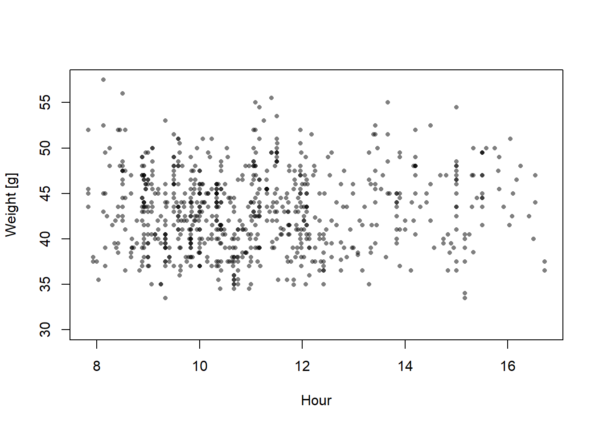
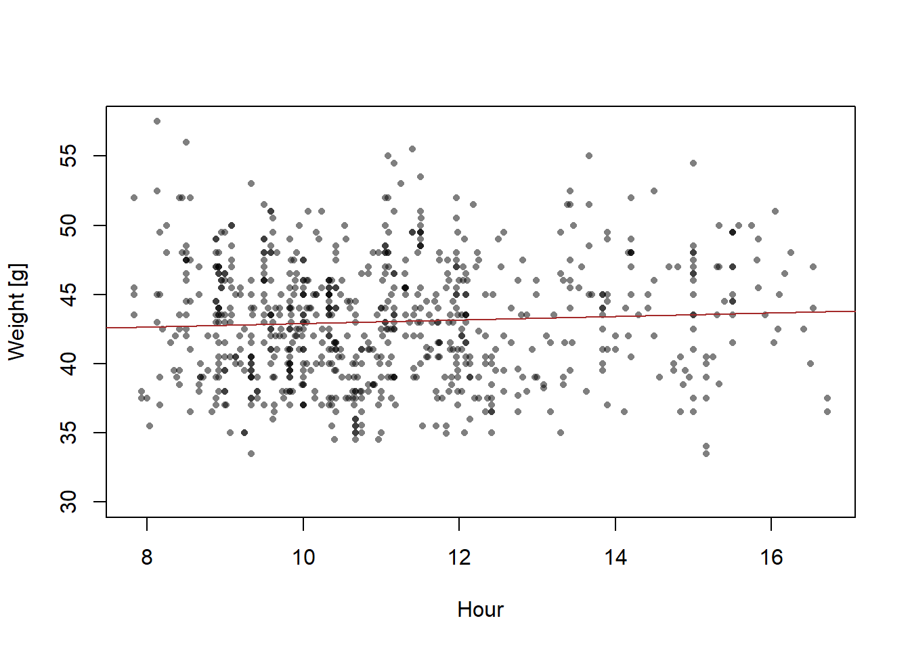

Chapter 13 Exercise: Refreshing R and linear models
13.1 Refreshing R
13.1.1 Software installation
Download R and RStudio.
Install the packages rmarkdown, bookdown, knitr, dplyr, tidyr, ggplot2and arm by typing install.packages("rmarkdown") etc. in the R-console. R-packages need to be installed only once, or after a major update of R.
13.1.2 Working with R
Writing and editing code is done in a text editor such as Wordpad or RStudio. RStudio is recommended because it is developed by the R development core team, it understands the R language and it communicates with R.
We write the code in the text file (.r or .rmd) and send it to the R-console in RStudio using ctrl + enter.
13.1.3 Working with rmarkdown
Rmarkdown allows knitting text with R code. The option to knit text with R code allows to write analyses reports without having to copy and paste results from the R console into a Word file. We can optionally show or hide R code and insert results directly in the text. Further, for sharing R code, it is extremely helpful to describe what the R code does in the text sections.
Text is written in plain. Latex notation can be used. Helpful introductions exist online.
R code is written within R chunks. In the header of the R chunks we can specify how the code, results and messages are shown in the output file. By pushing the “Knit” button all R-code is executed and displayed within a html, pdf or word document together with the text. The output format is specified in the header of the rmd-file.
The R-console is the calculator. R can be used as a simple calculator or we can create objects, such as x and apply functions such as mean() to the objects. Functions are followed by round brackets () whithin which we can provide arguments. In the help file of the functions (open by ? followed by the name of the function), we can see what arguments a function needs and what default values the arguments have.
# This is R-code, therefore text is outcommented by the hash-tag sign
36/5 # a mathematical expression
## [1] 7.2
x <- c(4,7,3,6,2,7,4,3,4,6,2,8) # a vector,
# x becomes an object in the R global environment
mean(x) # apply a function to an object
## [1] 4.666667
# arguments of functions are defined with a specific order
mean(4,7,3,6,2,7,4,3,4,6,2,8) # is not correct!
## [1] 4
# but
mean(c(4,7,3,6,2,7,4,3,4,6,2,8)) # is correct
## [1] 4.666667
# check ?mean for arguments, order of arguments and default values13.2 Linear regression
13.2.1 Theory
You find the theory to this exercise in Chapter 11 in the online book Bayesian Data Analyses Using Linear Models in R and Stan.
13.2.2 Fitting a Linear Regression in R
## Warning: Paket 'Matrix' wurde unter R Version 4.2.3 erstellt## Warning: Paket 'dplyr' wurde unter R Version 4.2.3 erstellt## Warning: Paket 'ggplot2' wurde unter R Version 4.2.3 erstellt13.2.3 Data
We use weight data of snowfinches Montifringilla nivalis that have been captured and ringed during the winter months and we ask how the average weight changes with the time of the day.
dat <- read.table("data/SFringlistwinter.txt", header=TRUE, sep="\t")
# select winter month
dat <- dat[is.element(dat$month, c(0:3)),]
dat$time.num <- dat$time_hour + dat$time_min/60
plot(dat$time.num, dat$weight, xlab="Hour", ylab="Weight [g]", pch=16, col=rgb(0,0,0,0.5), cex=0.7)
13.2.4 Fit the regression using lm
##
## Call:
## lm(formula = weight ~ time.num, data = dat)
##
## Coefficients:
## (Intercept) time.num
## 41.6403 0.1263plot(dat$time.num, dat$weight, xlab="Hour", ylab="Weight [g]", pch=16, col=rgb(0,0,0,0.5), cex=0.7)
abline(mod, col="brown")
What does the function
lmdo?What are the model parameters and what are their estimates?
How does the formula of the regression line look like?
13.2.5 Check the model assumptions
Figure 13.1: Diagnostic residual plots of a normal linear model fitted to simulated data, thus model assumptions are perfectly met. See text for explanation.
Would you trust this model? Do you think the model assumptions are met?
Which structures of the data could violate the model assumptions?
13.2.6 Drawing Conclusions
To answer the question about how strongly \(y\) is related to \(x\) taking into account statistical uncertainty we look at the estimated slope \(\beta_{1}\) and its standard error (SE). The slope \(\beta_{1}\) measures how much \(y\) increases in average when \(x\) is increased by 1 unit. The value of \(\beta_{1}\) is calculated from the data at hand. It is therefore, a characteristics of the specific data. However, we would like to draw our conclusions more generally, i.e. also in future, for new data, we expect that \(y\) increases by \(\beta_{1}\) if \(x\) increases by 1. However for these unmeasured, future data \(\beta_{1}\) may look differently. No statistical method can exactly predict how \(\beta_{1}\) will look for future data. However, if we assume that the model assumptions reflect the real world reasonable well, we can use the standard error (SE) as an estimate of how far away in average the estimated \(\beta_{1}\) may be from the underlying true value, i.e. a \(\beta_{1}\) that we would measure if we had sampled a very high number of (i.e., all) observations.
##
## Call:
## lm(formula = weight ~ time.num, data = dat)
##
## Residuals:
## Min 1Q Median 3Q Max
## -10.0561 -3.3193 -0.0361 3.0881 14.8323
##
## Coefficients:
## Estimate Std. Error t value Pr(>|t|)
## (Intercept) 41.64032 0.88299 47.159 <2e-16 ***
## time.num 0.12631 0.07829 1.613 0.107
## ---
## Signif. codes: 0 '***' 0.001 '**' 0.01 '*' 0.05 '.' 0.1 ' ' 1
##
## Residual standard error: 4.31 on 779 degrees of freedom
## (279 Beobachtungen als fehlend gelöscht)
## Multiple R-squared: 0.003331, Adjusted R-squared: 0.002051
## F-statistic: 2.603 on 1 and 779 DF, p-value: 0.1071- What does the output of the function
summarytell us?
To draw a 95% compatibility interval around the regression line, we first define new x-values for which we would like to have the fitted values (about 100 points across the range of x will produce smooth-looking lines when connected by line segments). We save these new x-values within the new data.frame newdat. (Fig. 13.2).
## [1] 7.833333 16.716667newdat <- data.frame(time.num = seq(7, 17, length=100))
newdat$fit <- predict(mod, newdata=newdat)
newdat$lwr <- predict(mod, interval="confidence", newdata=newdat)[,2]
newdat$upr <- predict(mod, interval="confidence", newdata=newdat)[,3]
plot(dat$time.num, dat$weight, xlab="Hour", ylab="Weight [g]", pch=16, col=rgb(0,0,0,0.5), cex=0.7)
lines(newdat$time.num, newdat$fit, lwd=2, col="brown")
lines(newdat$time.num, newdat$lwr, lwd=2, lty=3, col="brown")
lines(newdat$time.num, newdat$upr, lwd=2, lty=3, col="brown")Figure 13.2: Regression with 95% credible interval of the posterior distribution of the fitted values.
# Make the same plot using ggplot
#regplot <-
# ggplot(dat, aes(x = x, y = y)) +
# geom_point() +
# geom_abline(intercept = coef(mod)[1], slope=coef(mod)[2], lwd=1, col="blue") +
# geom_line(data = newdat, aes(x = x, y = CrI_lo), lty = 3) +
# geom_line(data = newdat, aes(x = x, y = CrI_up), lty = 3) +
# labs(x = "Predictor (x)", y = "Outcome (y)")
#regplotThe uncertainty interval measures statistical uncertainty of the regression line, but it does not describe how new observations would scatter around the regression line. If we want to describe where future observations will be, we have to report the prediction interval (see online book, posterior predictive distribution), or present the data within the plot of the regression line.
- How would you describe the results for a paper?